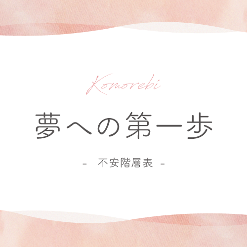

Zoomを使って離れていてもカウンセリングを受けることができる、オンラインカウンセリングサービスです。いつでもどこでも、気軽に予約をとることができるので、困ったときの相談室として、または自分を見つめなおすきっかけの場所として、ご活用ください。
01

認知行動療法シートカウンセリング
サイト上で公開している認知行動療法シートを
活用したカウンセリングです。
こんな方におすすめ
- ・認知行動療法シートの使い方に不安がある
- ・一人では不安だから、一緒に考えてほしい
- ・自分を振り返る時間を習慣化したい
| 10分（おためし） | 1000円 |
|---|---|
| 30分 | 2800円 |
- カウンセリングの平均的な流れ -
- 認知行動療法シートにそって、お話を聞きながら、内容を一緒に整理していきます。書き終わったら、振り返りをして、自分の思考の癖や認知の歪みを見つけ、今日より素敵な明日への道標にしましょう。
- 時間 -
- 平日 19:30~23:00
- 土日祝 12:00 ~ 20:00
02
通常カウンセリング
日常生活で溜まった心の疲れをそっとおろせる場所です。
毎日を頑張った心にご褒美をあげる感覚で、ゆっくりお話しましょう。
- こんな方におすすめ -
- ・じっくり自分と向き合いたい
- ・カウンセリングを受けたいけれど身近に
カウンセリングルームがない - ・とにかく誰かに話を聞いてほしい
| 45分 | 4500円 |
|---|
- カウンセリングの平均的な流れ -
- 1 初めの挨拶
- 2 現状の悩みや生きづらさをヒアリング
- 3 思考整理と思考パターンのクセに気づく対話カウンセリング
- 4 全体のまとめと次のステップについて
- 5 別れの挨拶
- 時間 -
- 平日 19:30~23:00
- 土日祝 12:00 ~ 20:00